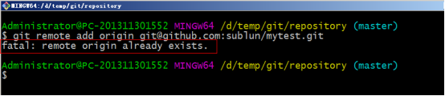
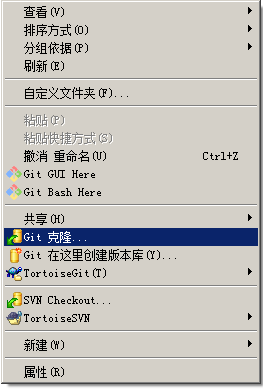

1 Git历史2Git与svn对比2.1Svn2.2Git3git工作流程4Git的安装4.1软件下载4.2软件安装4.2.1安装git for windows4.2.2安装TortoiseGit4.2.3安装中文语言包5使用git管理文件版本5.1创建版本库5.1.1使用GitBash5.1.2使用TortoiseGit5.2添加文件5.2.1添加文件过程5.2.2工作区和暂存区5.3修改文件5.3.1提交修改5.3.2查看修改历史5.3.3差异比较5.3.4还原修改5.4删除文件5.5案例：将java工程提交到版本库5.6忽略文件语法规范6远程仓库6.1添加远程库6.1.1在github上创建仓库6.1.2ssh协议6.1.3同步到远程仓库6.2从远程仓库克隆6.2.1使用git bash：6.2.2使用TortoiseGit：6.3从远程仓库取代码6.4搭建私有Git服务器6.4.1服务器搭建6.4.2连接服务器7分支管理7.1创建合并分支7.2使用TortoiseGit实现分支管理7.2.1创建分支7.2.2合并分支7.3解决冲突8在IntelliJ IDEA中使用git8.1在Idea中配置git8.2将工程添加至git8.3从远程仓库克隆8.4从服务端拉取代码
1 Git历史
同生活中的许多伟大事件一样，Git 诞生于一个极富纷争大举创新的年代。Linux 内核开源项目有着为数众广的参与者。绝大多数的 Linux 内核维护工作都花在了提交补丁和保存归档的繁琐事务上（1991－2002年间）。到 2002 年，整个项目组开始启用分布式版本控制系统 BitKeeper 来管理和维护代码。
到 2005 年的时候，开发 BitKeeper 的商业公司同 Linux 内核开源社区的合作关系结束，他们收回了免费使用 BitKeeper 的权力。这就迫使 Linux 开源社区（特别是 Linux的缔造者 Linus Torvalds ）不得不吸取教训，只有开发一套属于自己的版本控制系统才不至于重蹈覆辙。他们对新的系统订了若干目标：
• 速度
• 简单的设计
• 对非线性开发模式的强力支持（允许上千个并行开发的分支）
• 完全分布式
• 有能力高效管理类似 Linux 内核一样的超大规模项目（速度和数据量）
2Git与svn对比
2.1Svn
SVN是集中式版本控制系统，版本库是集中放在中央服务器的，而干活的时候，用的都是自己的电脑，所以首先要从中央服务器哪里得到最新的版本，然后干活，干完后，需要把自己做完的活推送到中央服务器。集中式版本控制系统是必须联网才能工作，如果在局域网还可以，带宽够大，速度够快，如果在互联网下，如果网速慢的话，就郁闷了。 下图就是标准的集中式版本控制工具管理方式：
集中管理方式在一定程度上看到其他开发人员在干什么，而管理员也可以很轻松掌握每个人的开发权限。 但是相较于其优点而言，集中式版本控制工具缺点很明显： 服务器单点故障 容错性差
2.2Git
Git是分布式版本控制系统，那么它就没有中央服务器的，每个人的电脑就是一个完整的版本库，这样，工作的时候就不需要联网了，因为版本都是在自己的电脑上。既然每个人的电脑都有一个完整的版本库，那多个人如何协作呢？比如说自己在电脑上改了文件A，其他人也在电脑上改了文件A，这时，你们两之间只需把各自的修改推送给对方，就可以互相看到对方的修改了。 下图就是分布式版本控制工具管理方式：
3git工作流程
一般工作流程如下：
1．从远程仓库中克隆 Git 资源作为本地仓库。
2．从本地仓库中checkout代码然后进行代码修改
3．在提交前先将代码提交到暂存区。
4．提交修改。提交到本地仓库。本地仓库中保存修改的各个历史版本。
5．在修改完成后，需要和团队成员共享代码时，可以将代码push到远程仓库。
下图展示了 Git 的工作流程：

4Git的安装
最早Git是在Linux上开发的，很长一段时间内，Git也只能在Linux和Unix系统上跑。不过，慢慢地有人把它移植到了Windows上。现在，Git可以在Linux、Unix、Mac和Windows这几大平台上正常运行了。由于开发机大多数情况都是windows，所以本教程只讲解windows下的git的安装及使用。
4.1软件下载
xxxxxxxxxx下载地址：https://git-scm.com/download参考资料中安装包已经下载完毕，根据不同的操作系统选择对应的安装包。
4.2软件安装
4.2.1安装git for windows
 一路“下一步”使用默认选项即可。
一路“下一步”使用默认选项即可。
4.2.2安装TortoiseGit
一路“下一步”使用默认选项即可。 默认选项下会启动配置画面： 由于目前只有英文语言包，默认即可继续下一步。 配置git.exe，在4.2.1中已经安装过git-for-windows了所以在此找到git.exe所在的目录。 配置开发者姓名及邮箱，每次提交代码时都会把此信息包含到提交的信息中。 使用默认配置，点击“完成”按钮完成配置。 完整完毕后在系统右键菜单中会出现git的菜单项。
4.2.3安装中文语言包
安装中文语言包并不是必选项。可以根据个人情况来选择安装。 直接“下一步”完整完毕。 语言包安装完毕后可以在TortoiseGit的设置中调整语言
5使用git管理文件版本
5.1创建版本库
xxxxxxxxxx什么是版本库呢？版本库又名仓库，英文名repository，你可以简单理解成一个目录，这个目录里面的所有文件都可以被Git管理起来，每个文件的修改、删除，Git都能跟踪，以便任何时刻都可以追踪历史，或者在将来某个时刻可以“还原”。由于git是分布式版本管理工具，所以git在不需要联网的情况下也具有完整的版本管理能力。创建一个版本库非常简单，可以使用git bash也可以使用tortoiseGit。首先，选择一个合适的地方，创建一个空目录（D:\temp\git\repository）。
5.1.1使用GitBash
在当前目录中点击右键中选择Git Bash来启动。 或者在开始菜单中启动。注意如果是从开始菜单启动的gitbash需要切换目录到仓库所在的目录。 创建仓库执行命令： $ git init
5.1.2使用TortoiseGit
使用TortoiseGit时只需要在目录中点击右键菜单选择“在这里创建版本库” 版本库创建成功，会在此目录下创建一个.git的隐藏目录，如下所示： 在windows中如何显示隐藏目录隐藏目录请自行百度o(╯□╰)o 概念： 版本库：“.git”目录就是版本库，将来文件都需要保存到版本库中。 工作目录：包含“.git”目录的目录，也就是.git目录的上一级目录就是工作目录。只有工作目录中的文件才能保存到版本库中。
5.2添加文件
5.2.1添加文件过程
在D:\temp\git\repository目录下创建一个mytest.txt文件
文本文件变为带“+”号的图标：
提交文件：在mytest.txt上再次点击右键选择“提交”，此时将文件保存至版本库中。

5.2.2工作区和暂存区
xxxxxxxxxxGit和其他版本控制系统如SVN的一个不同之处就是有暂存区的概念。
什么是工作区（Working Directory）？
工作区就是你在电脑里能看到的目录，比如我的reporstory文件夹就是一个工作区。
有的同学可能会说repository不是版本库吗怎么是工作区了？其实repository目录是工作区，在这个目录中的“.git”隐藏文件夹才是版本库。这回概念清晰了吧。
Git的版本库里存了很多东西，其中最重要的就是称为stage（或者叫index）的暂存区，还有Git为我们自动创建的第一个分支master，以及指向master的一个指针叫HEAD。
如下图所示：
 分支和HEAD的概念我们稍后再讲。前面讲了我们把文件往Git版本库里添加的时候，是分两步执行的：
第一步是用git add把文件添加进去，实际上就是把文件修改添加到暂存区；
第二步是用git commit提交更改，实际上就是把暂存区的所有内容提交到当前分支。
因为我们创建Git版本库时，Git自动为我们创建了唯一一个master分支，所以，现在，git commit就是往master分支上提交更改。
你可以简单理解为，需要提交的文件修改通通放到暂存区，然后，一次性提交暂存区的所有修改。
分支和HEAD的概念我们稍后再讲。前面讲了我们把文件往Git版本库里添加的时候，是分两步执行的：
第一步是用git add把文件添加进去，实际上就是把文件修改添加到暂存区；
第二步是用git commit提交更改，实际上就是把暂存区的所有内容提交到当前分支。
因为我们创建Git版本库时，Git自动为我们创建了唯一一个master分支，所以，现在，git commit就是往master分支上提交更改。
你可以简单理解为，需要提交的文件修改通通放到暂存区，然后，一次性提交暂存区的所有修改。
5.3修改文件
5.3.1提交修改
xxxxxxxxxx被版本库管理的文件不可避免的要发生修改，此时只需要直接对文件修改即可。修改完毕后需要将文件的修改提交到版本库。在mytest.txt文件上点击右键，然后选择“提交”
5.3.2查看修改历史
xxxxxxxxxx在开发过程中可能会经常查看代码的修改历史，或者叫做修改日志。来查看某个版本是谁修改的，什么时间修改的，修改了哪些内容。可以在文件上点击右键选择“显示日志”来查看文件的修改历史。
5.3.3差异比较
xxxxxxxxxx当文件内容修改后，需要和修改之前对比一下修改了哪些内容此时可以使用“比较差异功能”
5.3.4还原修改
xxxxxxxxxx当文件修改后不想把修改的内容提交，还想还原到未修改之前的状态。此时可以使用“还原”功能
注意：此操作会撤销所有未提交的修改，所以当做还原操作是需要慎重慎重！！！
5.4删除文件
需要删除无用的文件时可以使用git提供的删除功能直接将文件从版本库中删除。

5.5案例：将java工程提交到版本库
第一步：将参考资料中的java工程project-test复制到工作目录中 第二步：将工程添加到暂存区。 点击确定完成暂存区添加。 三、忽略文件或文件夹 在此工程中，并不是所有文件都需要保存到版本库中的例如“bin”目录及目录下的文件就可以忽略。好在Git考虑到了大家的感受，这个问题解决起来也很简单，在Git工作区的根目录下创建一个特殊的.gitignore文件，然后把要忽略的文件名填进去，Git就会自动忽略这些文件。 如果使用TortoiseGit的话可以使用菜单项直接进行忽略。 选择保留本地文件。完成后在此文件夹内会多出一个.gitignore文件，这个文件就是文件忽略文件，当然也可以手工编辑。其中的内容就是把bin目录忽略掉。 四、提交代码 将代码添加到master分支上，其中.gitignore文件也需要添加到暂存区，然后提交到版本库。
5.6忽略文件语法规范
空行或是以 # 开头的行即注释行将被忽略。 可以在前面添加正斜杠 / 来避免递归,下面的例子中可以很明白的看出来与下一条的区别。 可以在后面添加正斜杠 / 来忽略文件夹，例如 build/ 即忽略build文件夹。 可以使用 ! 来否定忽略，即比如在前面用了 *.apk ，然后使用 !a.apk ，则这个a.apk不会被忽略。
- 用来匹配零个或多个字符，如 *.[oa] 忽略所有以".o"或".a"结尾， *~ 忽略所有以 ~ 结尾的文件（这种文件通常被许多编辑器标记为临时文件）； [] 用来匹配括号内的任一字符，如 [abc] ，也可以在括号内加连接符，如 [0-9] 匹配0至9的数； ? 用来匹配单个字符。 看了这么多，还是应该来个栗子：
- 忽略 .a 文件 *.a
- 但否定忽略 lib.a, 尽管已经在前面忽略了 .a 文件 !lib.a
- 仅在当前目录下忽略 TODO 文件， 但不包括子目录下的 subdir/TODO /TODO
- 忽略 build/ 文件夹下的所有文件 build/
- 忽略 doc/notes.txt, 不包括 doc/server/arch.txt doc/*.txt
- 忽略所有的 .pdf 文件 在 doc/ directory 下的 doc/*/.pdf
6远程仓库
6.1添加远程库
xxxxxxxxxx现在我们已经在本地创建了一个Git仓库，又想让其他人来协作开发，此时就可以把本地仓库同步到远程仓库，同时还增加了本地仓库的一个备份。常用的远程仓库就是github：https://github.com/，接下来我们演示如何将本地代码同步到github。
6.1.1在github上创建仓库
首先你得在github上创建一个账号，这个就不演示了。然后在github上创建一个仓库： 点击“create repository”按钮仓库就创建成功了。 Github支持两种同步方式“https”和“ssh”。如果使用https很简单基本不需要配置就可以使用，但是每次提交代码和下载代码时都需要输入用户名和密码。如果使用ssh方式就需要客户端先生成一个密钥对，即一个公钥一个私钥。然后还需要把公钥放到githib的服务器上。这两种方式在实际开发中都用应用，所以我们都需要掌握。接下来我们先看ssh方式。
6.1.2ssh协议
6.1.2.1什么是ssh? SSH 为 Secure Shell（安全外壳协议）的缩写，由 IETF 的网络小组（Network Working Group）所制定。SSH 是目前较可靠，专为远程登录会话和其他网络服务提供安全性的协议。利用 SSH 协议可以有效防止远程管理过程中的信息泄露问题。 6.1.2.2基于密匙的安全验证 使用ssh协议通信时，推荐使用基于密钥的验证方式。你必须为自己创建一对密匙，并把公用密匙放在需要访问的服务器上。如果你要连接到SSH服务器上，客户端软件就会向服务器发出请求，请求用你的密匙进行安全验证。服务器收到请求之后，先在该服务器上你的主目录下寻找你的公用密匙，然后把它和你发送过来的公用密匙进行比较。如果两个密匙一致，服务器就用公用密匙加密“质询”（challenge）并把它发送给客户端软件。客户端软件收到“质询”之后就可以用你的私人密匙解密再把它发送给服务器。 6.1.2.3ssh密钥生成 在windows下我们可以使用 Git Bash.exe来生成密钥，可以通过开始菜单或者右键菜单打开Git Bash git bash 执行命令,生命公钥和私钥 命令: ssh-keygen -t rsa 执行命令完成后,在window本地用户.ssh目录C:\Users\用户名.ssh下面生成如下名称的公钥和私钥: 6.1.2.4ssh密钥配置 密钥生成后需要在github上配置密钥本地才可以顺利访问。 在key部分将id_rsa.pub文件内容添加进去，然后点击“Add SSH key”按钮完成配置。
6.1.3同步到远程仓库
同步到远程仓库可以使用git bash也可以使用tortoiseGit 6.1.3.1使用git bash 在仓库所在的目录（D:\temp\git\repository）点击右键选择“Git Bash Here”，启动git bash程序。 然后在git bash中执行如下语句： git remote add origin git@github.com:sublun/mytest.git git push -u origin master 注意：其中红色字体部分需要替换成个人的用户名。 如何出现如下错误：  可以先执行如下命令，然后再执行上面的命令 $ git remote rm origin 6.1.3.2使用TortoiseGit同步 一、由于TortoiseGit使用的ssh工具是“PuTTY”git Bash使用的ssh工具是“openSSH”，如果想让TortoiseGit也使用刚才生成的密钥可以做如下配置： Url：远程仓库的地址 推送URL：也是相同的 Putty密钥：选择刚才生成的密钥中的私钥 二、同步。在本地仓库的文件夹中单击右键，选择“Git同步”
6.2从远程仓库克隆
克隆远程仓库也就是从远程把仓库复制一份到本地，克隆后会创建一个新的本地仓库。选择一个任意部署仓库的目录，然后克隆远程仓库。
6.2.1使用git bash：
$ git clone git@github.com:sublun/mytest.git
6.2.2使用TortoiseGit：
在任意目录点击右键： 
6.3从远程仓库取代码
Git中从远程的分支获取最新的版本到本地有这样2个命令： 1.git fetch：相当于是从远程获取最新版本到本地，不会自动merge（合并代码） 2.git pull：相当于是从远程获取最新版本并merge到本地 上述命令其实相当于git fetch 和 git merge 在实际使用中，git fetch更安全一些 因为在merge前，我们可以查看更新情况，然后再决定是否合并 如果使用TortoiseGit的话可以从右键菜单中点击“拉取”（pull）或者“获取”（fetch）
6.4搭建私有Git服务器
6.4.1服务器搭建
xxxxxxxxxx远程仓库实际上和本地仓库没啥不同，纯粹为了7x24小时开机并交换大家的修改。GitHub就是一个免费托管开源代码的远程仓库。但是对于某些视源代码如生命的商业公司来说，既不想公开源代码，又舍不得给GitHub交保护费，那就只能自己搭建一台Git服务器作为私有仓库使用。搭建Git服务器需要准备一台运行Linux的机器，在此我们使用CentOS。以下为安装步骤：
1、安装git服务环境准备 yum -y install curl curl-devel zlib-devel openssl-devel perl cpio expat-devel gettext-devel gcc cc 2、下载git-2.5.0.tar.gz 1）解压缩 2）cd git-2.5.0 3）autoconf 4）./configure 5）make 6）make install 3、添加用户 adduser -r -c 'git version control' -d /home/git -m git 此命令执行后会创建/home/git目录作为git用户的主目录。 5、设置密码 passwd git 输入两次密码 6、切换到git用户 su git 7、创建git仓库 git --bare init /home/git/first 注意：如果不使用“--bare”参数，初始化仓库后，提交master分支时报错。这是由于git默认拒绝了push操作，需要.git/config添加如下代码： [receive] denyCurrentBranch = ignore 推荐使用：git --bare init初始化仓库。
6.4.2连接服务器
xxxxxxxxxx私有git服务器搭建完成后就可以向连接github一样连接使用了，但是我们的git服务器并没有配置密钥登录，所以每次连接时需要输入密码。
使用命令连接： $ git remote add origin ssh://git@192.168.25.156/home/git/first 这种形式和刚才使用的形式好像不一样，前面有ssh://前缀，好吧你也可以这样写： $ git remote add origin git@192.168.25.156:first 使用TortoiseGit同步的话参考上面的使用方法。
7分支管理
7.1创建合并分支
xxxxxxxxxx在我们每次的提交，Git都把它们串成一条时间线，这条时间线就是一个分支。截止到目前，只有一条时间线，在Git里，这个分支叫主分支，即master分支。HEAD指针严格来说不是指向提交，而是指向master，master才是指向提交的，所以，HEAD指向的就是当前分支。一开始的时候，master分支是一条线，Git用master指向最新的提交，再用HEAD指向master，就能确定当前分支，以及当前分支的提交点：
每次提交，master分支都会向前移动一步，这样，随着你不断提交，master分支的线也越来越长。
当我们创建新的分支，例如dev时，Git新建了一个指针叫dev，指向master相同的提交，再把HEAD指向dev，就表示当前分支在dev上：
 你看，Git创建一个分支很快，因为除了增加一个dev指针，改改HEAD的指向，工作区的文件都没有任何变化！
不过，从现在开始，对工作区的修改和提交就是针对dev分支了，比如新提交一次后，dev指针往前移动一步，而master指针不变：
你看，Git创建一个分支很快，因为除了增加一个dev指针，改改HEAD的指向，工作区的文件都没有任何变化！
不过，从现在开始，对工作区的修改和提交就是针对dev分支了，比如新提交一次后，dev指针往前移动一步，而master指针不变：
 假如我们在dev上的工作完成了，就可以把dev合并到master上。Git怎么合并呢？最简单的方法，就是直接把master指向dev的当前提交，就完成了合并：
所以Git合并分支也很快！就改改指针，工作区内容也不变！
合并完分支后，甚至可以删除dev分支。删除dev分支就是把dev指针给删掉，删掉后，我们就剩下了一条master分支：
假如我们在dev上的工作完成了，就可以把dev合并到master上。Git怎么合并呢？最简单的方法，就是直接把master指向dev的当前提交，就完成了合并：
所以Git合并分支也很快！就改改指针，工作区内容也不变！
合并完分支后，甚至可以删除dev分支。删除dev分支就是把dev指针给删掉，删掉后，我们就剩下了一条master分支：
7.2使用TortoiseGit实现分支管理
使用TortoiseGit管理分支就很简单了。
7.2.1创建分支
在本地仓库文件夹中点击右键，然后从菜单中选择“创建分支”：
 如果想创建完毕后直接切换到新分支可以勾选“切换到新分支”选项或者从菜单中选择“切换/检出”来切换分支：
如果想创建完毕后直接切换到新分支可以勾选“切换到新分支”选项或者从菜单中选择“切换/检出”来切换分支：
7.2.2合并分支
分支切换到dev后就可以对工作区的文件进行修改，然后提交到dev分支原理的master分支不受影响。例如我们修改mytest.txt中的内容，然后提交到dev分支。 切换到master分支后还是原理的内容： 将dev分支的内容合并到master分支，当前分支为master。从右键菜单中选择“合并”： 再查看mytest.txt的内容就已经更新了：
7.3解决冲突
xxxxxxxxxx两个分支中编辑的内容都是相互独立互不干扰的，那么如果在两个分支中都对同一个文件进行编辑，然后再合并，就有可能会出现冲突。
例如在master分支中对mytest.txt进行编辑： 然后提交到版本库。 切换到dev分支，对mytest.txt进行编辑： 最后进行分支合并，例如将dev分支合并到master分支。需要先切换到master分支然后进行分支合并。 出现版本冲突。 冲突需要手动解决。 在冲突文件上单机右键选择“解决冲突”菜单项： 把冲突解决完毕的文件提交到版本库就可以了。
8在IntelliJ IDEA中使用git
8.1在Idea中配置git
安装好IntelliJ IDEA后，如果Git安装在默认路径下，那么idea会自动找到git的位置，如果更改了Git的安装位置则需要手动配置下Git的路径。 选择File→Settings打开设置窗口，找到Version Control下的git选项： 选择git的安装目录后可以点击“Test”按钮测试是否正确配置。
8.2将工程添加至git
1）在idea中创建一个工程，例如创建一个java工程，名称为idea-git-test，如下图所示：
2）创建本地仓库
在菜单中选择“vcs”→Import into Version Control→Create Git Repository...
 选择工程所在的上级目录。本例中应该选择idea-projects目录，然后点击“OK”按钮，在工程的上级目录创建本地仓库，那么idea-projects目录就是本地仓库的工作目录，此目录中的工程就可以添加到本地仓库中。也就是可以把idea-git-test工程添加到本地仓库中。
选择之后在工具栏上就多出了git相关工具按钮：
3）将工程添加至本地仓库
直接点击 commit按钮，将工程提交至本地仓库。
然后点击“commit”按钮，将工程添加至本地仓库。
4）推送到远程
在github上创建一个仓库然后将本地仓库推送到远程。
在工程上点击右键，选择git→Repository→push，
或者在菜单中选择vcs→git→push
选择工程所在的上级目录。本例中应该选择idea-projects目录，然后点击“OK”按钮，在工程的上级目录创建本地仓库，那么idea-projects目录就是本地仓库的工作目录，此目录中的工程就可以添加到本地仓库中。也就是可以把idea-git-test工程添加到本地仓库中。
选择之后在工具栏上就多出了git相关工具按钮：
3）将工程添加至本地仓库
直接点击 commit按钮，将工程提交至本地仓库。
然后点击“commit”按钮，将工程添加至本地仓库。
4）推送到远程
在github上创建一个仓库然后将本地仓库推送到远程。
在工程上点击右键，选择git→Repository→push，
或者在菜单中选择vcs→git→push
 点击“Define remote”链接，配置https形式的URL，git形式的无法通过。然后点击OK
点击“push”按钮就讲本地仓库推送到远程，如果是第一次配置推送需要输入github的用户名和密码。
点击“Define remote”链接，配置https形式的URL，git形式的无法通过。然后点击OK
点击“push”按钮就讲本地仓库推送到远程，如果是第一次配置推送需要输入github的用户名和密码。
8.3从远程仓库克隆
关闭工程后，在idea的欢迎页上有“Check out from version control”下拉框，选择git 此处仍然推荐使用htts形式的url，点击“test”按钮后显示连接成功。 点击OK按钮后根据提示将远程仓库克隆下来，然后倒入到idea中。
8.4从服务端拉取代码
如果需要从服务端同步代码可以使用工具条中的“update”按钮